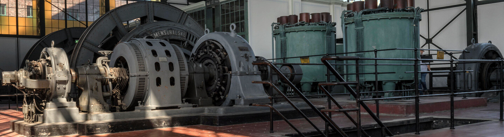
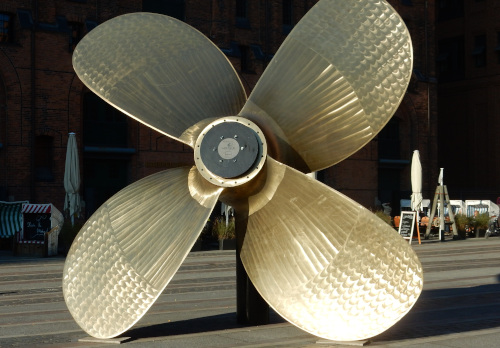
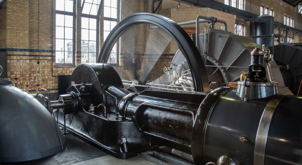
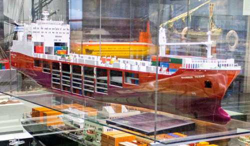

Buy TicketsExhibitions
Explore three interactive exhibitions that bring Fredrikstad's industrial heritage to life. From the shipyards of Fredrikstad Mekaniske Verksted to the people who helped shape the city and the innovations driving tomorrow's maritime industries, each exhibition offers hands-on experiences for visitors of all ages. Discover Fredrikstad's story through history, science, engineering, and creativity.
The Shipyard Experience
Step into the world of shipbuilding and discover how ships were designed, built, and launched. Explore the science and engineering behind shipbuilding through interactive activities and hands-on challenges, and discover how teamwork, craftsmanship, and innovation helped make Fredrikstad Mekaniske Verksted an important part of the city's history.


Fredrikstad - The Industrial City
Discover how industry transformed Fredrikstad into a thriving industrial community. Explore the people, workplaces, technologies, and innovations that shaped everyday life, and discover how engineering and industry changed the city and its communities. See how Fredrikstad's industrial heritage continues to influence the city today.
Build the Future
Innovation never stops. Become an engineer, inventor, or problem-solver and explore robotics, sustainable technology, renewable energy, and the future of maritime engineering. Design, build, experiment, test your ideas, and discover how science and engineering can help create the solutions of tomorrow
